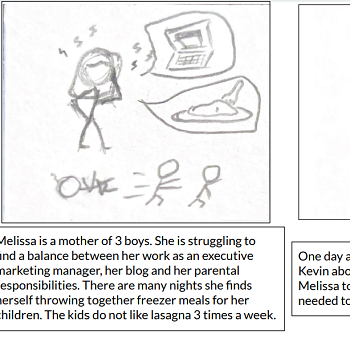
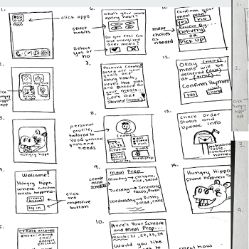
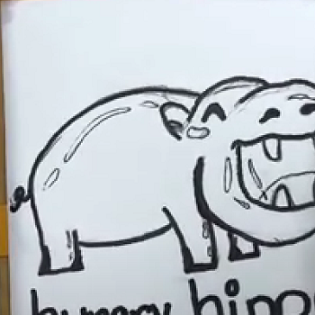
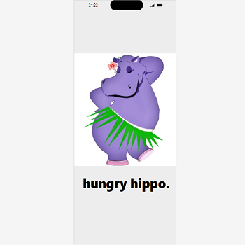

Problem Statement: Food Dilemma

Many college students are unable to manage their time and incorporate eating a balanced meal into their daily lives.
Affinity Diagram: Food Dilemma

Group Struggle Bus brought together ideas of everything to do with a food timer such as incentives to the very name of the program.
Persona: Personas for Food Dilemma

Below is a persona of an average consumer for our Food Dilemma program
Storyboard: Food Dilemma
Team Struggle Bus worked individually to create scenarios for possible consumers that may have a Food Dilemma.
Sketches: Hungry Hippo
Team Struggle Bus worked individually to create possible playthroughs of the Hungry Hippo app, creating multiple paths to succes.
Paper Prototype: Hungry Hippo
Team Struggle Bus worked together to do a visual look into the apps future presentation.
High Fidelity Prototype: Hungry Hippo
Team Struggle Bus worked together to create an experience very close to what the Hungry Hippos application would look like in working time.